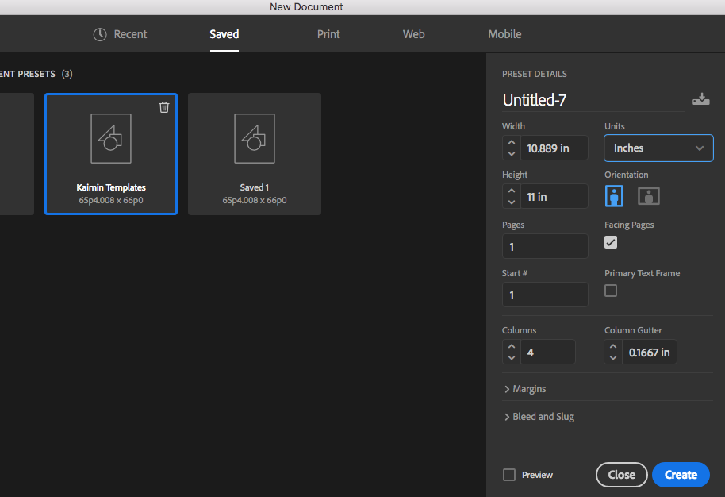
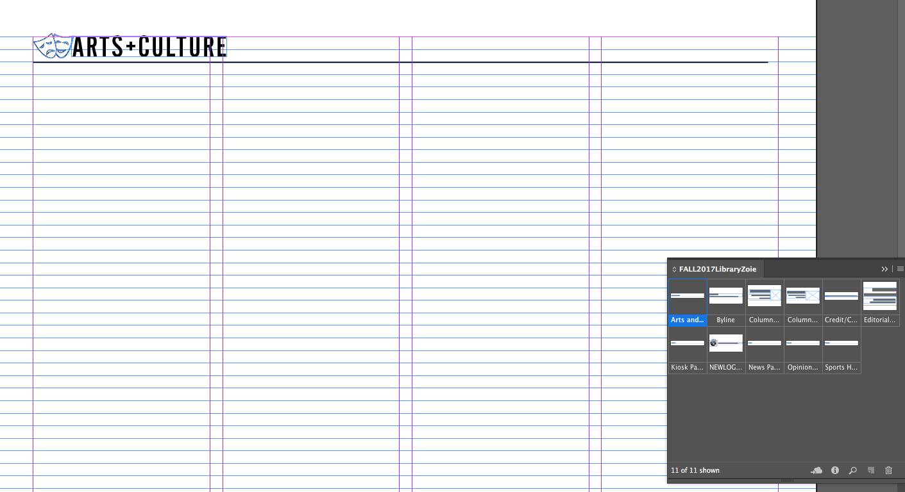
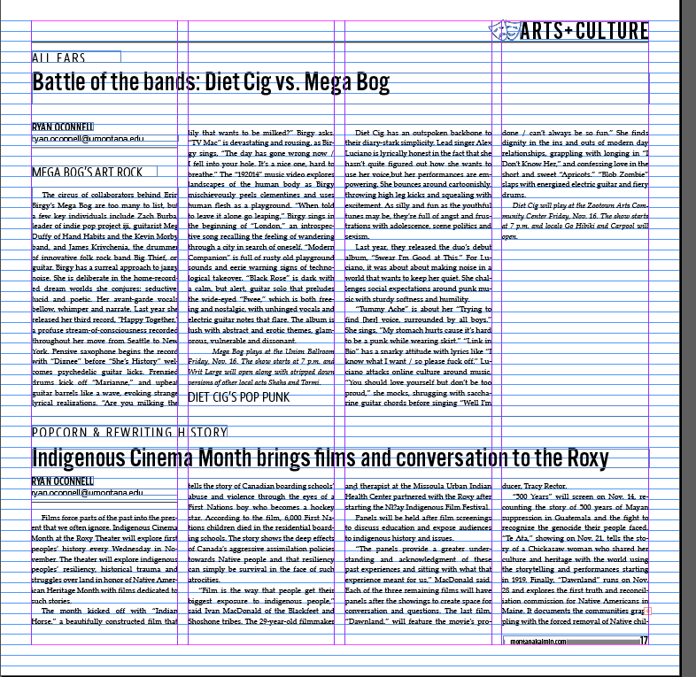

If you're reading this, you're a new designer at the Montana Kaimin.This page is a brief, basic instruction on how to put together your first page of the newspaper.
Open Adobe InDesign CC and create a new document. The document must be 10.889 in. wide and 11 inches tall. It will need 4 columns, with a gutter of 0.1667 inches. Margins should be 0.499996 inches or 3 picas on all sides.
Click "create" and make sure your document guidelines are on by going to View > Grids and Guides > Show baseline grid. Make sure your library is open by going to File > Open > and navigating to your Designer's Personal folder before selecting the file that says YourNameLibrary2018. Now you're ready to start layout!

Load the paragraph styles by opening the paragraph styles window and clicking on the hamburger icon in the right corner, and choosing "Load Paragraph Styles." Open the paragraph styles document in the same designer's folder as the library.
From your library, drag out the page number element from the library and fill in the right dates. Double click on the bottom right corner to tighten the bounding box and then place the page number element with the box lining up exactly with the margin lines. Even numbered pages should be on the bottom left corner and odd numbered page numbers would go on the right.

Drag out the page header element for the appropriate section (opinion, news, sports) and place it so the bottom line is resting on the second guide down from the top, so the top of the letters are just touching the margin of the page.
Now its time to start adding content to the page. Pull the story from the Kaimin's google drive, the budget will tell you where the folder is located. Place the story in the columns and apply the Body paragraph style. Place the headline and apply headline style. Place the caption, title and photo credit and apply the appropriate styles.

Drag the byline element out of the library and fill in the appropriate information.
Add photos or visuals to the page and size them appropriately (usually taking up whole colums). Size headlines so they go all the way across the page. Adjust kerning so the story ends on an even line. Add a 0.25 line between the stories, leaving a single grid space on each side.